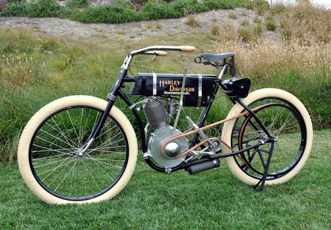

Harley-Davidson története
A Harley-Davidson Motor Company egy amerikai motorkerékpár-gyártó cég, amelyet William S. Harley és a Davidson fivérek alapítottak 1903-ban.
A legendás márka egyedien átalakított limitált modelljeiről és nagy teljesítményű, szériagyártású motorjairól lett híres.
A prototípus még egy 10,2 köbinches (167,15 köbcentiméteres) motorral készült, de már a készülő járművek „lelke” az úgynevezett F-hengeres 24,74 köbinches (405,41 köbcentiméteres) hengerűrtartalmú szívómotor volt, ami mindössze 2-3 lóerős teljesítményű volt.
A motor, hogy beinduljon, be kellett pedálozni, a hátsó kereket pedig szíjáttétellel hajtották.
Egy 1904 elejéről származó, Number One feliratot viselő motorral, s 1905-ben gyártott vázzal szerelt gépezet ma is látható a cég milwaukee-i az egykori Chestnut Streeten (később Juneau Avenue-re kereszteltek át) álló központjában.